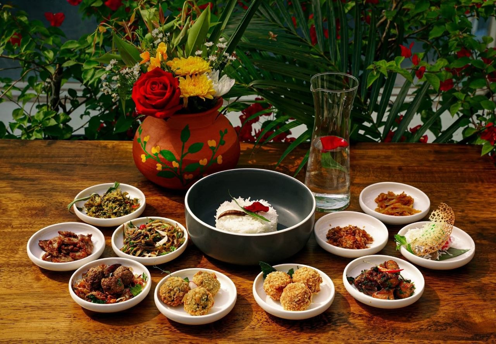

သင်္ကြန်ထမင်း
အဆင့် (၁) ထမင်းပြင်ဆင်ခြင်း
ဆန်ကို ဆန်ပြုတ်ကဲ့သို နူးအိအောင်ချက်ပြီး ဇကာဖြင့် ရေစစ်ပါ။ ထမင်းစေးများ ကုန်စင်အောင် ရေအေးဖြင့် အထပ်ထပ်ဆေးကာ ရေခဲဖြင့် အေးအောင် ထားပါ။
အဆင့် (၂) ဖယောင်းရေ (သင်းရေ) ပြုလုပ်ခြင်း
မီးရဲနေသော မီးသွေးခဲပေါ်သို နံ့သာနှင့် ဖယောင်းဖတ်များတင်၍ ရရှိလာသော အငွေ့ကို မြေအိုးထဲတွင် လုံအောင်ပိတ်၍ ဖမ်းပါ။ ထိုနောက် သောက်ရေလောင်းထည့်ပြီး အနံ့စိမ့်ဝင်အောင် အဖုံးအုပ်ထားပါ။
အဆင့် (၃) သရက်သီးငါးခြောက်ထောင်းကြော်
ငါးခြောက်ကို ပြုတ်၍ ညက်အောင်ထောင်းပါ။ ဆီပူတွင် ငရုတ်သီးခြောက်နှင့် ကြက်သွန်နီကို အရင်ကြော်ပြီး ဆယ်ထားပါ။ ကျန်ဆီဖြင့် ငါးခြောက်ထောင်းကို ခြောက်အောင်ကြော်ပြီးမှ သရက်သီးခြစ်နှင့် ကြက်သွန်နီအဖတ်များ ထည့်မွှေကာ အရသာသွင်းပါ။
မွန်လူမျိုးတို၏ ရိုးရာအစားအစာဖြစ်ပြီး ၁၉ ရာစုတွင် ထိုင်းနိုင်ငံသို Khao Chae အမည်ဖြင့် ပျံ့နှံရောက်ရှိကာ နန်းတွင်းဟင်းလျာ ဖြစ်ခဲ့သည်။ပူပြင်းလှသော နွေရာသီနှင့် လိုက်ဖက်စေရန် ဖယောင်းနံ့သွင်းထားသော ရေအေးဖြင့် ထမင်းကို ရော၍ စားသုံးရသည့် မြန်မာ့နှစ်သစ်ကူး သင်္ကြန်ကာလ၏ သင်္ကေတတစ်ခုဖြစ်သည်။ အရသာထူးကဲသော ငါးခြောက်ထောင်းကြော်၊ သရက်သီးငပိကြော် (သိုမဟုတ် သရက်သီးသုပ်) နှင့် ငရုတ်သီးတောင့်ကြော် တိုဖြင့် ရိုးရှင်းသော်လည်း စနစ်တကျ ပြင်ဆင်စားသုံးကြသည်။ နွေအပူကို အောင်းစေပြီး လန်းဆန်းစေတဲ့ ဒီရိုးရာအစားအစာဟာ အခုဆိုရင် တိုင်းရင်းသားအားလုံး နှစ်သက်ကြတဲ့ အထင်ကရ အစားအစာတစ်ခု ဖြစ်နေပါပြီ။
ထမင်း: ဆန်ကောင်း၊ ရေခဲတုံး။
သင်းရေ (ဖယောင်းရေ): သောက်ရေသန့်၊ နံ့သာတုံး၊ ပျားဖယောင်း၊ မီးသွေးခဲ။
ဟင်းပွဲ: ငါးခြောက်၊၊ သရက်သီးစိမ်း၊ ကြက်သွန်နီ၊ ငရုတ်သီးခြောက်တောင့်။